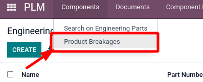

<section class="oe_container oe_dark">
    <div class="oe_row oe_spaced">
        <h2 class="oe_slogan">Breakages Managment </h2>
        <div class="oe_span12">
            <p class="oe_mt32">
				This module allows you to handle breakages on product and bom 
            </p>
            <p class="oe_mt32">
            	How it works:
            	<ul>
					<li>Inside you product you have a new Button for managin the breakages</li>
					<li>
						
					</li> 
					<li>This is the breakage form 
						
					</li>
                    <li>And here you have a dedicated menu for all the brakages 
                        
                    </li>
            	</ul>
            	<p>
            	After that you have your normal bom created
            	</p>
            </p>
            <p>We also add a report on the bom in order to see all the cutted parts related to the B.O.M</p>
         </div>
    </div>
</section>